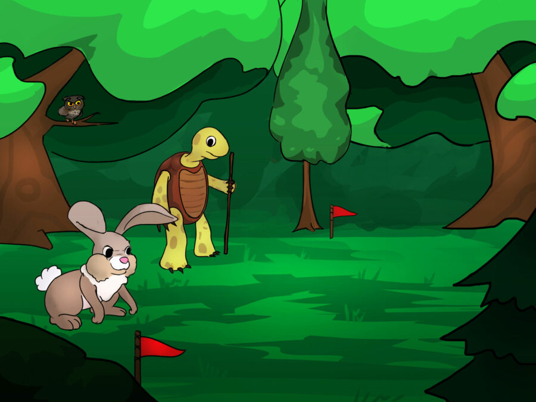

A long time ago there was a hare who wouldn’t stop teasing a tortoise for his slowness. “I’m the fastest runner in the woods and you are the slowest one! We should compete!” he jeered.
One day the tortoise, tired of the hare showing off, agreed to have a running competition. “You may be fast, but I am persistent”, he said.
The next day the tortoise and the hare stood at the start, ready for the race. “One, two, three, go”, said the hare and they started running.
The hare was a long way in front of the tortoise when he saw a field of cabbages. He looked back and almost couldn’t see the tortoise. “Take your time!” he shouted to the tortoise, “I’ll have a snack here and still I’ll win the race!”
When he had finished his breakfast, the hare looked around to see how far the tortoise had got. He still hadn’t passed halfway! Feeling sleepy after his snack, the hare thought to himself, “I will have a quick snooze now and when I wake up I will quickly run past the finish line.”
He fell into a deep sleep and dreamed of winning the competition. Time passed and the sun was already setting when the hare woke up. He jumped and looked around to see the tortoise a few steps from the finish line.
The hare rushed towards the finish line as fast as he could, but the tortoise was already crossing it, winning the competition. “You don’t always have to be the fastest to win”, the tortoise told the hare, who was sobbing in disgrace.
Thank you for reading the story! Hope you understood it.
Let’s Test your Understanding?
Yes
No
Reference: https://taleswithgigi.com/the-tortoise-and-the-hare/